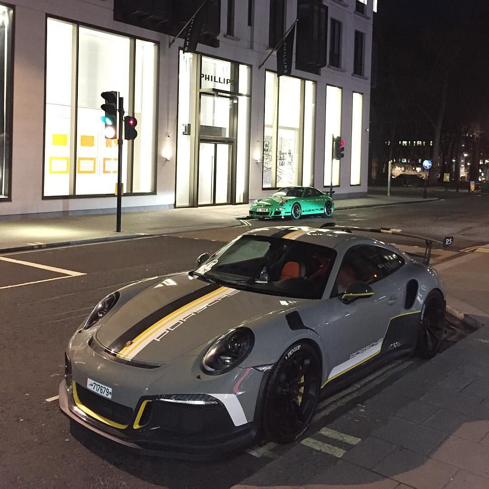
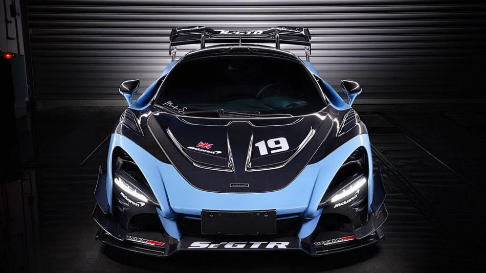
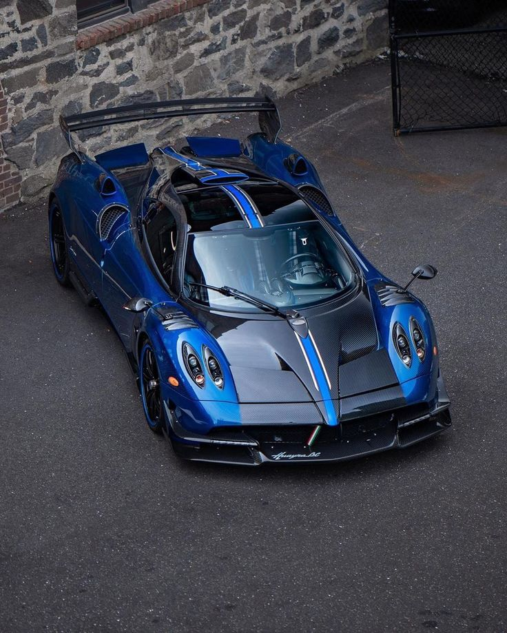
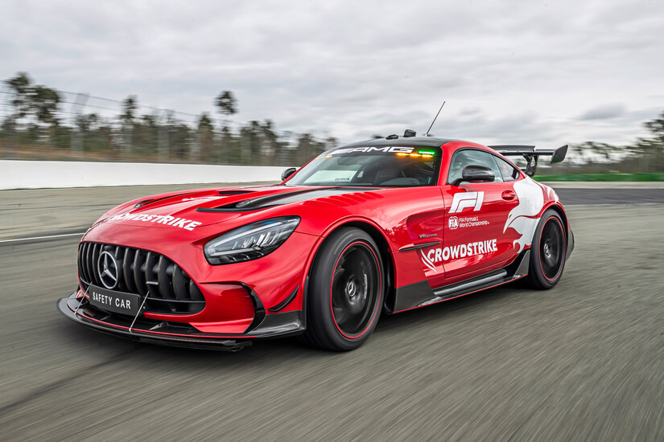

El Porsche 911 GT3 RS es un superdeportivo de dos puertas y dos plazas fabricado por el fabricante alemán Porsche. Es la versión más extrema del 911 GT3, y está diseñado para ofrecer el máximo rendimiento en circuito.
El GT3 RS está propulsado por un motor bóxer de seis cilindros y 4,0 litros que produce 520 CV y 470 Nm de par. El motor está acoplado a una transmisión manual de seis velocidades. El GT3 RS acelera de 0 a 100 km/h en 3,2 segundos y tiene una velocidad máxima de 312 km/h.

El McLaren 720S es un superdeportivo de dos puertas y dos plazas fabricado por el fabricante británico McLaren Automotive. Fue presentado en el Salón del Automóvil de Ginebra de 2017 como sucesor del McLaren 650S.
El 720S está propulsado por un motor V8 biturbo de 4,0 litros que produce 720 CV y 770 Nm de par. El motor está acoplado a una transmisión automática de doble embrague de siete velocidades. El 720S acelera de 0 a 100 km/h en 2,9 segundos y tiene una velocidad máxima de 341 km/h.

El Pagani Huayra es un superdeportivo de dos puertas y dos plazas fabricado por el fabricante italiano Pagani Automobili. Fue presentado en el Salón del Automóvil de Ginebra de 2011 como sucesor del Pagani Zonda.
El Huayra está propulsado por un motor Mercedes-AMG V12 de 6,0 litros que produce 730 CV y 730 Nm de par. El motor está acoplado a una transmisión automática de siete velocidades. El Huayra acelera de 0 a 100 km/h en 3,3 segundos y tiene una velocidad máxima de 370 km/h.

El Mercedes-AMG GT Black Series es un superdeportivo de alto rendimiento homologado para la calle, desarrollado por Mercedes-AMG, la división de alto rendimiento de Mercedes-Benz. Se presentó en 2020 como el modelo más potente de la gama GT, superando al AMG GT R Pro.